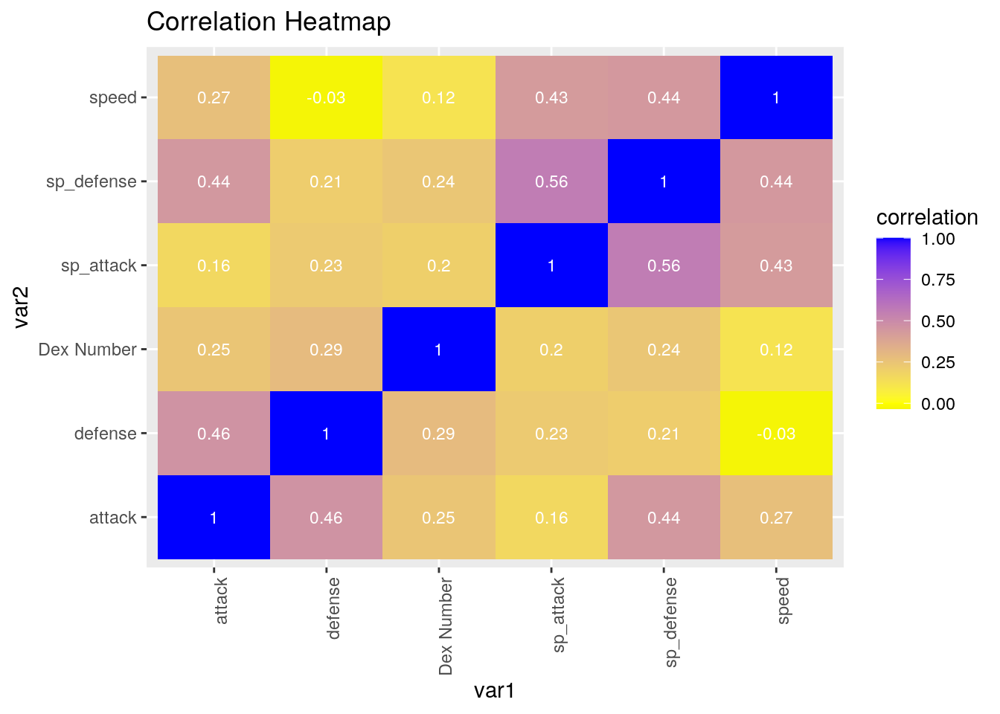
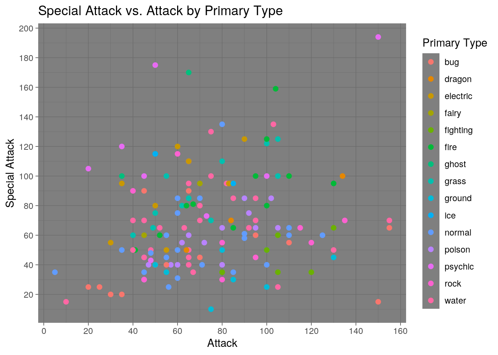
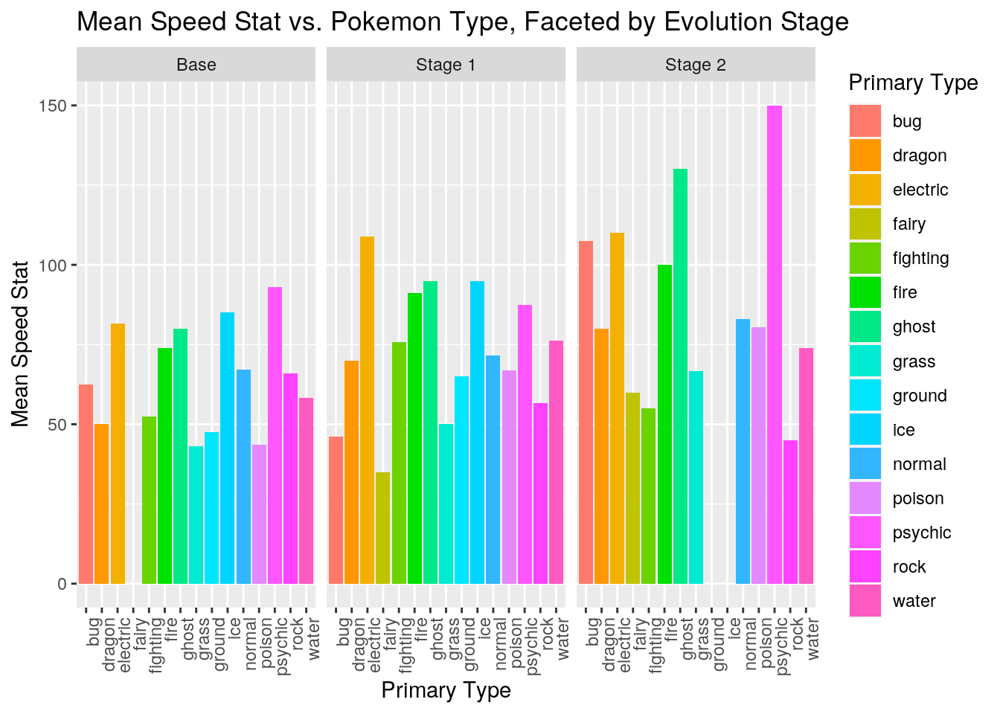
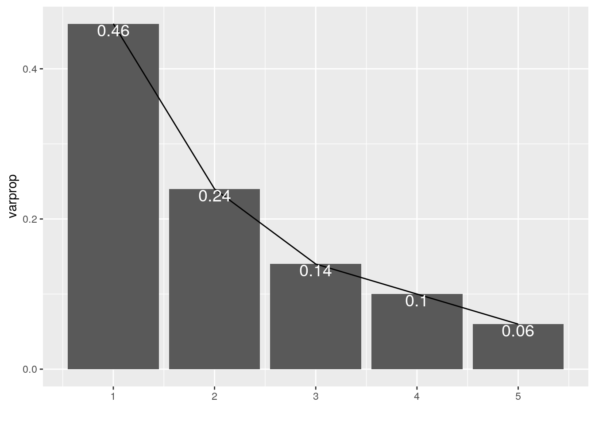
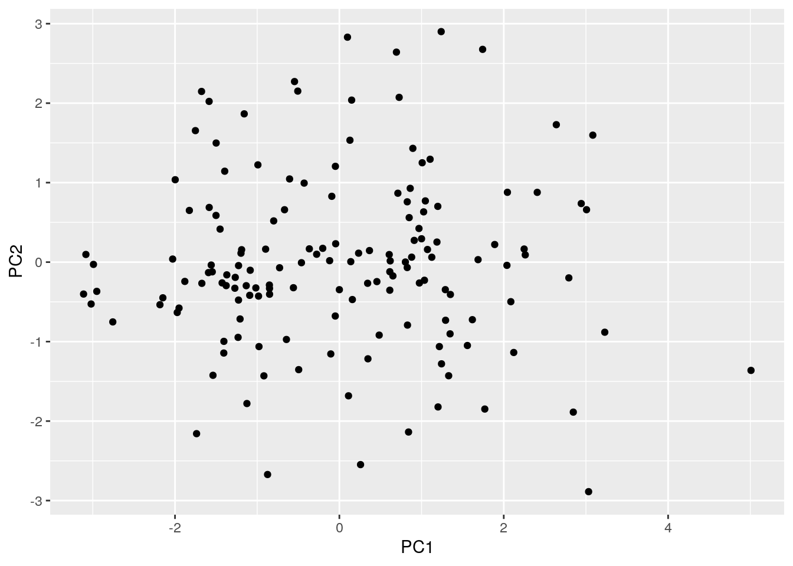
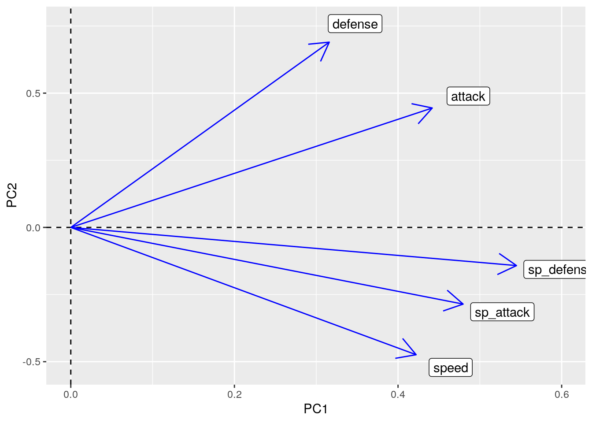

The first generation of Pokemon was first released in 1998, nearly 23 years ago, impacting millions of lives as a hit video game. As time has gone on, these 151 initial Pokemon have been remade since their first official release. The datasets chosen from Kaggle show the difference between these Pokemon in stats throughout the time. The datasets include the Pokemon, the identifying Pokedex number, each Pokemon’s attack, defense, special attack, special defense, and speed stats, their primary type, and identifies how far each Pokemon is in their evolution line. This is interesting to me because I have played and still enjoy to this day every Pokemon game ever released, and it is a nostalgia trip to go back and analyze the first digital creatures that made me fall in love with the franchise in my childhood. Through this data, I hope to see Pokemon having certain higher stat values based on type, as well as overall increase in statistics as the Pokemon has evolved.
library(dplyr)
library(tidyverse)
library(readxl)
pokemon <- read_excel("pokemon.xlsx")
library(readxl)
Dataset2 <- read_excel("Dataset2.xlsx")
PokemonType <- pokemon %>% select("Primary Type", "name", "Dex Number") %>%
pivot_wider(names_from = "Primary Type", values_from = "name")
head(PokemonType)## # A tibble: 6 x 16
## `Dex Number` grass fire water bug normal poison electric ground fairy
## <dbl> <chr> <chr> <chr> <chr> <chr> <chr> <chr> <chr> <chr>
## 1 1 Bulb… <NA> <NA> <NA> <NA> <NA> <NA> <NA> <NA>
## 2 2 Ivys… <NA> <NA> <NA> <NA> <NA> <NA> <NA> <NA>
## 3 3 Venu… <NA> <NA> <NA> <NA> <NA> <NA> <NA> <NA>
## 4 4 <NA> Char… <NA> <NA> <NA> <NA> <NA> <NA> <NA>
## 5 5 <NA> Char… <NA> <NA> <NA> <NA> <NA> <NA> <NA>
## 6 6 <NA> Char… <NA> <NA> <NA> <NA> <NA> <NA> <NA>
## # … with 6 more variables: fighting <chr>, psychic <chr>, rock <chr>,
## # ghost <chr>, ice <chr>, dragon <chr>PokemonType <- PokemonType %>% pivot_longer(2:16, names_to = "Primary Type",
values_to = "name", values_drop_na = T)
head(PokemonType)## # A tibble: 6 x 3
## `Dex Number` `Primary Type` name
## <dbl> <chr> <chr>
## 1 1 grass Bulbasaur
## 2 2 grass Ivysaur
## 3 3 grass Venusaur
## 4 4 fire Charmander
## 5 5 fire Charmeleon
## 6 6 fire CharizardThese datasets were already tidy to begin with, but to showcase the process, I took the datasets in their long form and pivoted it to the wide form. This made the data untidy, and from there, I pivoted the data from the wide form back to the long form, making the data tidy again. A sample of this is shown as the header.
PokemonDataset <- left_join(pokemon, Dataset2, by = "name")I used left join dplyr function to join the dataset by name. Between my two datasets, the only two things in common were by the names of the Pokemon, with each dataset having distinct variables. By using a left join function, the variables present in the second dataset that was not present in the first dataset was added on to created a merged dataset.
PokemonDataset %>% filter(`Primary Type` == "water") %>% summarize_at(vars(attack:speed),
mean)## # A tibble: 1 x 5
## attack defense sp_attack sp_defense speed
## <dbl> <dbl> <dbl> <dbl> <dbl>
## 1 72.0 81.8 68.0 67.8 67.7PokemonDataset %>% filter(`Primary Type` == "dragon") %>% summarize_at(vars(attack:speed),
mean)## # A tibble: 1 x 5
## attack defense sp_attack sp_defense speed
## <dbl> <dbl> <dbl> <dbl> <dbl>
## 1 94 68.3 73.3 73.3 66.7PokemonDataset %>% filter(`Primary Type` == "dragon") %>% summarize_at(vars(attack:speed),
sd)## # A tibble: 1 x 5
## attack defense sp_attack sp_defense speed
## <dbl> <dbl> <dbl> <dbl> <dbl>
## 1 36.1 25.2 25.2 25.2 15.3PokemonDataset %>% filter(`Primary Type` == "dragon") %>% summarize_at(vars(attack:speed),
quantile)## # A tibble: 5 x 5
## attack defense sp_attack sp_defense speed
## <dbl> <dbl> <dbl> <dbl> <dbl>
## 1 64 45 50 50 50
## 2 74 55 60 60 60
## 3 84 65 70 70 70
## 4 109 80 85 85 75
## 5 134 95 100 100 80PokemonDataset %>% group_by(`Primary Type`) %>% summarize(mean_spatk = mean(sp_attack,
na.rm = T), sd_spatk = sd(sp_attack, na.rm = T))## # A tibble: 15 x 3
## `Primary Type` mean_spatk sd_spatk
## <chr> <dbl> <dbl>
## 1 bug 45.8 26.5
## 2 dragon 73.3 25.2
## 3 electric 91.7 26.2
## 4 fairy 77.5 24.7
## 5 fighting 45 13.2
## 6 fire 88.8 30.1
## 7 ghost 128. 36.9
## 8 grass 89.8 21.6
## 9 ground 35.6 13.7
## 10 ice 105 14.1
## 11 normal 55.6 24.1
## 12 poison 57.1 17.5
## 13 psychic 114. 49.8
## 14 rock 61.7 27.6
## 15 water 68.0 29.2PokemonDataset %>% group_by(`Primary Type`) %>% summarize(max_def = max(defense,
na.rm = T))## # A tibble: 15 x 2
## `Primary Type` max_def
## <chr> <dbl>
## 1 bug 120
## 2 dragon 95
## 3 electric 95
## 4 fairy 73
## 5 fighting 80
## 6 fire 90
## 7 ghost 80
## 8 grass 123
## 9 ground 120
## 10 ice 100
## 11 normal 100
## 12 poison 120
## 13 psychic 100
## 14 rock 160
## 15 water 180PokemonDataset %>% group_by(`Primary Type`) %>% summarize(max_SpDef = max(sp_defense,
na.rm = T))## # A tibble: 15 x 2
## `Primary Type` max_SpDef
## <chr> <dbl>
## 1 bug 90
## 2 dragon 100
## 3 electric 95
## 4 fairy 90
## 5 fighting 110
## 6 fire 115
## 7 ghost 95
## 8 grass 120
## 9 ground 80
## 10 ice 125
## 11 normal 110
## 12 poison 100
## 13 psychic 120
## 14 rock 95
## 15 water 130PokemonDataset2 <- PokemonDataset %>% mutate(TotDef = defense +
sp_defense) %>% arrange(TotDef)PokemonDataset2 %>% filter(TotDef == min(TotDef)) %>% select(name)## # A tibble: 1 x 1
## name
## <chr>
## 1 JigglypuffPokemonDataset2 %>% group_by(PokemonDataset2$Evolution) %>% summarize(mean(TotDef))## # A tibble: 3 x 2
## `PokemonDataset2$Evolution` `mean(TotDef)`
## <chr> <dbl>
## 1 Base 119.
## 2 Stage 1 149.
## 3 Stage 2 168.When examining all 151 Pokemon, I wanted to observe the ones that I had a special interest. My favorite type of Pokemon is the water type, so I wanted to see the overall stats of the water type. I filtered all the Pokemon so I only had the water Pokemon, and then found the mean of their stats. Water Pokemon in generation one tended to have higher attack and defense than special attack and special defense, with a mean of 72 attack and 81.8 defense and a mean of 68 special attack and 67.8 special defense. Their average speed is around 67.7. To compare, I then did the same with my second favorite type, Dragon types, and took the mean stats of all Dragon Pokemon in generation one. In general, Dragon Pokemon had a much higher attack, special attack, and special defense, with means of 94, 73.3, and 73.3 respectively. Dragon Pokemon had a lower mean defense value of 68, and speed was relatively the same, with it being 66.7. Special attack was a statistic added to this generation later on, and I observed the mean special attack of Pokemon of each primary type along with their standard deviations. Ghost Pokemon had the highest mean special attack with a value of 128.33, while Ground type Pokemon had the least with a mean value of 35.6
I then analyzed the defensive stats of Pokemon. I found the maximum defense and special defense stat of a singular Pokemon of each type, with a Water Pokemon having the highest defense stat value of 180 and the highest special defense stat value of 120. I mutated the dataset to create a new stat value, titled Total Defense, which was the defense stat + the special defense stat of each Pokemon and added it to the dataset. I used this new dataset to find the Pokemon with the lowest combined defensive stat, which identified the Pokemon as Jigglypuff. I finally analyzed Pokemon stats based on how far along they were in their evolution line. I grouped the generation one Pokemon by their evolution stage and took the mean of their combined Defensive stat value titled Total Defense, which showed base Pokemon having a mean value of 119.01, stage 1 Pokemon having a mean value of 148.83, and Stage 2 Pokemon having a mean value of 168.05, which is in line with the idea that Pokemon get stronger as they evolve. ## Visualizing
corMatrix <- PokemonDataset %>% select_if(is.numeric) %>% cor(use = "pair")
tidycor <- corMatrix %>% as.data.frame %>% rownames_to_column("var1") %>%
pivot_longer(-1, names_to = "var2", values_to = "correlation")
tidycor %>% ggplot(aes(var1, var2, fill = correlation)) + geom_tile() +
geom_text(aes(label = round(correlation, 2)), color = "white",
size = 3) + theme(axis.text.x = element_text(angle = 90,
hjust = 1)) + scale_fill_gradient2(low = "black", mid = "yellow",
high = "blue") + ggtitle("Correlation Heatmap") A correlation heatmap was produced to see if there was a correlation between the numerical variables in the dataset. In general, there is no correlation from one stat to another. This is most likely to induce variety in the Pokemon games, since having Pokemon with similar stats would be offer a bland experience in the games. However, there seems to be a stronger correlation between the physical stat values and the special stat values. Attack and Defense seem to be slightly more correlated with each other than other stats, and the same phenomena persists with Special Attack and Special Defense. There was one inconsistency in this heatmap, which is the Dex Number of each Pokemon, since this is not a statistical value to measure a Pokemon’s strength and therefore should have no correlation with a Pokemon’s stats.
ggplot(data = PokemonDataset, aes(x = attack, y = sp_attack,
color = `Primary Type`)) + geom_point(size = 2) + theme_minimal() +
scale_x_continuous(breaks = round(seq(0, 200, 20))) + scale_y_continuous(breaks = round(seq(0,
200, 20))) + theme_dark() + labs(title = "Special Attack vs. Attack by Primary Type",
x = "Attack", y = "Special Attack") A scatter plot was created to attempt to see if there was a relationship between the type of the Pokemon and their two offensive stat values: Attack and Special Attack. All 151 Pokemon in generation one were plotted along with their two offensive stats and were color coded by their Primary Type in order to find a relationship. However, this scatter plot is mostly random, and does not show any particular relationship between a Pokemon’s type and its offensive stats.
ggplot(data = PokemonDataset, aes(x = `Primary Type`, y = speed,
fill = `Primary Type`)) + geom_bar(stat = "summary", fun = mean) +
facet_wrap(~PokemonDataset$Evolution) + xlab("Pokemon Type") +
ylab("Mean Speed Stat") + scale_fill_hue(l = 75, c = 150) +
theme(axis.text.x = element_text(angle = 90, hjust = 1)) +
labs(title = "Mean Speed Stat vs. Pokemon Type, Faceted by Evolution Stage",
x = "Primary Type", y = "Mean Speed Stat") A final method of comparison came with a bar graph comparing the Mean Speed Stat, a Pokemon’s Type, and a Pokemon’s Evolution Stage. This Graph has a clear relationship, which shows a general increase in the mean Speed stat of a particular Type of Pokemon as they progress in their evolution line. The Pokemon were also separated by Pokemon type, as it is possible that a Pokemon’s type has an influence on their speed. This was important since the graph shows that certain Pokemon Type, such as Ground, Grass, or Rock, generally have lower Speed values, and failure to separate Pokemon by their Type would lead to data with a lower correlation, which is seen in the previous scatter plot. The missing bars in this graph are due to certain evolution stages not having a Pokemon of that particular Primary Type. ## Dimensionality Reduction
PokemonDataset3 <- PokemonDataset %>% select(name, attack, defense,
sp_attack, sp_defense, speed)
Poke_Num <- PokemonDataset3 %>% select_if(is.numeric) %>% scale
rownames(Poke_Num) <- PokemonDataset3$name
Poke_PCA <- princomp(Poke_Num)
names(Poke_PCA)## [1] "sdev" "loadings" "center" "scale" "n.obs" "scores" "call"summary(Poke_PCA, loadings = T)## Importance of components:
## Comp.1 Comp.2 Comp.3 Comp.4 Comp.5
## Standard deviation 1.516158 1.0849151 0.8427545 0.69845899 0.54132359
## Proportion of Variance 0.462812 0.2369775 0.1429940 0.09821945 0.05899696
## Cumulative Proportion 0.462812 0.6997896 0.8427836 0.94100304 1.00000000
##
## Loadings:
## Comp.1 Comp.2 Comp.3 Comp.4 Comp.5
## attack 0.442 0.445 0.559 0.140 0.525
## defense 0.316 0.690 -0.338 -0.404 -0.383
## sp_attack 0.480 -0.286 -0.630 0.533
## sp_defense 0.545 -0.142 0.668 -0.486
## speed 0.422 -0.474 0.420 -0.602 -0.240Poke_EIG <- Poke_PCA$sdev^2
varprop = round(Poke_EIG/sum(Poke_EIG), 2)
ggplot() + geom_bar(aes(y = varprop, x = 1:5), stat = "identity") +
geom_path(aes(y = varprop, x = 1:5)) + geom_text(aes(x = 1:5,
y = varprop, label = round(varprop, 4)), col = "white", vjust = 1,
size = 5) + xlab("") + scale_x_continuous(breaks = 1:10) +
scale_y_continuous(breaks = seq(0, 0.6, 0.2))
eigen(cor(Poke_Num))## eigen() decomposition
## $values
## [1] 2.3140602 1.1848876 0.7149701 0.4910973 0.2949848
##
## $vectors
## [,1] [,2] [,3] [,4] [,5]
## [1,] -0.4418268 0.4446714 -0.55864410 -0.13986509 -0.5247961
## [2,] -0.3159542 0.6898360 0.33786128 0.40416060 0.3831491
## [3,] -0.4795619 -0.2855182 0.62962959 0.09109456 -0.5326989
## [4,] -0.5447828 -0.1420882 0.02842702 -0.66785327 0.4859903
## [5,] -0.4221305 -0.4740084 -0.42014879 0.60230038 0.2404809pokedf <- data.frame(PC1 = Poke_PCA$scores[, 1], PC2 = Poke_PCA$scores[,
2])
ggplot(pokedf, aes(PC1, PC2)) + geom_point()
Pokemon <- PokemonDataset$`Primary Type`
Poke_PCA$scores[, 1:5] %>% as.data.frame %>% top_n(3, Comp.1)## Comp.1 Comp.2 Comp.3 Comp.4 Comp.5
## Charizard 3.229291 -0.8819084 -0.84854925 0.38302946 0.7101075
## Gyarados 3.083745 1.5974322 1.13105138 1.21235196 -0.3423189
## Mewtwo 5.008563 -1.3623548 0.01664345 -0.08326073 1.7576158Pokemon <- PokemonDataset$`Primary Type`
Poke_PCA$scores[, 1:5] %>% as.data.frame %>% top_n(-3, Comp.1)## Comp.1 Comp.2 Comp.3 Comp.4 Comp.5
## Caterpie -3.112558 -0.40178476 0.1933928 -0.2957835 -0.007427557
## Metapod -3.084235 0.09639086 -0.5411303 -0.1952822 -0.336342429
## Weedle -3.020428 -0.52692162 0.4169009 -0.3062741 0.104944560Pokemon <- PokemonDataset$`Primary Type`
Poke_PCA$scores[, 1:5] %>% as.data.frame %>% top_n(3, wt = Comp.2)## Comp.1 Comp.2 Comp.3 Comp.4 Comp.5
## Slowbro 1.74315688 2.676818 -2.9975415 -0.5427474 -0.3701680
## Cloyster 1.23878068 2.900131 -1.1620628 -2.0523733 -0.4101431
## Rhydon 0.09867304 2.830099 0.5088679 -0.3281182 0.6040532Pokemon <- PokemonDataset$`Primary Type`
Poke_PCA$scores[, 1:5] %>% as.data.frame %>% top_n(3, wt = desc(Comp.2))## Comp.1 Comp.2 Comp.3 Comp.4 Comp.5
## Abra -0.8735878 -2.672161 -0.7517005 -0.3259855 0.40735031
## Kadabra 0.2576272 -2.547613 -0.7276450 -0.4286162 0.30829305
## Alakazam 3.0326366 -2.887990 -1.2780140 -1.0226939 -0.03828696Poke_PCA$loadings[1:5, 1:2] %>% as.data.frame %>% rownames_to_column %>%
ggplot() + geom_hline(aes(yintercept = 0), lty = 2) + geom_vline(aes(xintercept = 0),
lty = 2) + ylab("PC2") + xlab("PC1") + geom_segment(aes(x = 0,
y = 0, xend = Comp.1, yend = Comp.2), arrow = arrow(), col = "blue") +
geom_label(aes(x = Comp.1 * 1.1, y = Comp.2 * 1.1, label = rowname)) For this dataset, I ran a PCA to find variance. The numerical values used for this dataset is attack, defense, special attack, special defense, and speed. Approximately 70% of the variance is accounted for with both PC1 and PC2. PC1 has a similar sign and magnitude, so the higher a Pokemon’s score for PC1 means it is generally stronger. For PC2, the higher the score, the stronger the Pokemon is in attack and defense, but the weaker it is in special attack and special defense. The Pokemon that scored the highest on PC1 were Charizard, Gyarados, and Mewtwo meaning they are generally strong, while the Pokemon that scored the weakest are Caterpie, Metapod, and Weedle. The Pokemon that scored the highest in PC2 are Slowbro, Cloyster, and Rhydon, while the Pokemon that scored the lowest were Abra, Kadabra, and Alakazam. This means Slowbro, Cloyster, and Rhydon are strong in attack and defense, but weak in special defense, special attack, and speed. The Pokemon weakest in attack and defense but strong in special defense, special attack, and speed are Abra, Kadabra, and Alakazam. This is seen in the last graph, where all five stats contribute to PC1, but there is only a positive correlation with attack and defense in PC2.